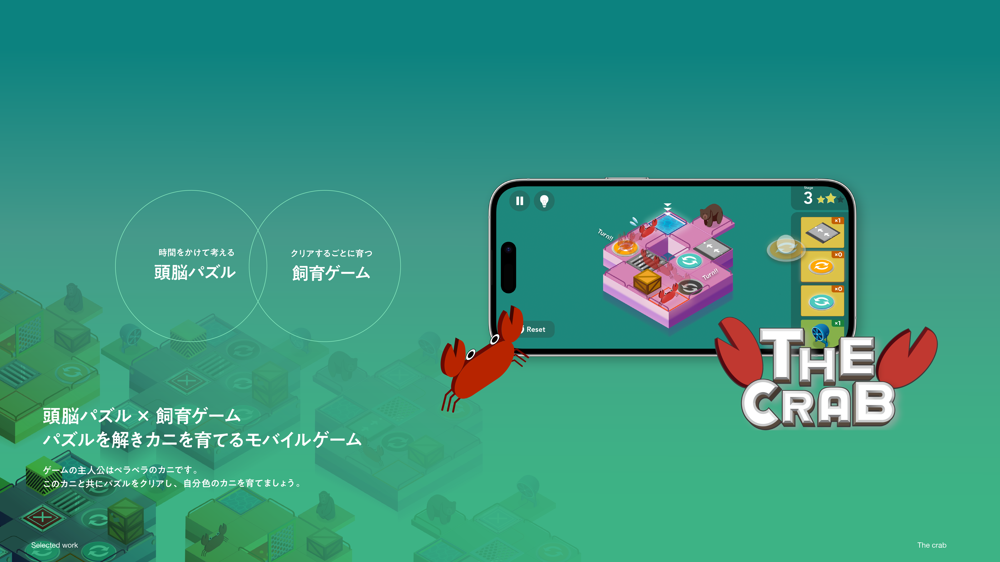
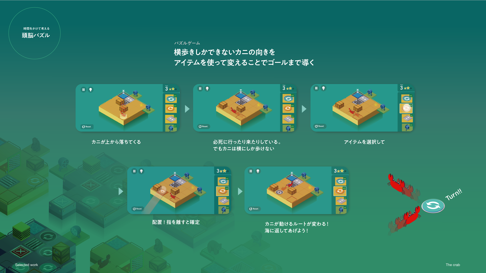
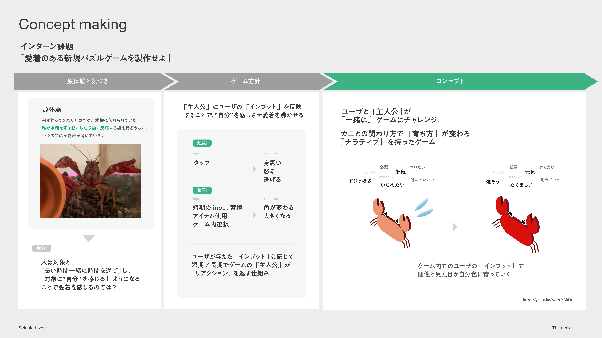
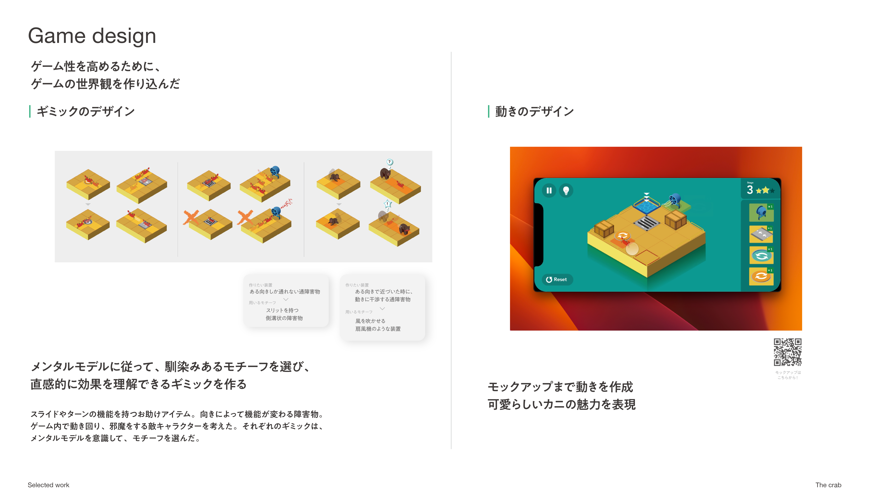
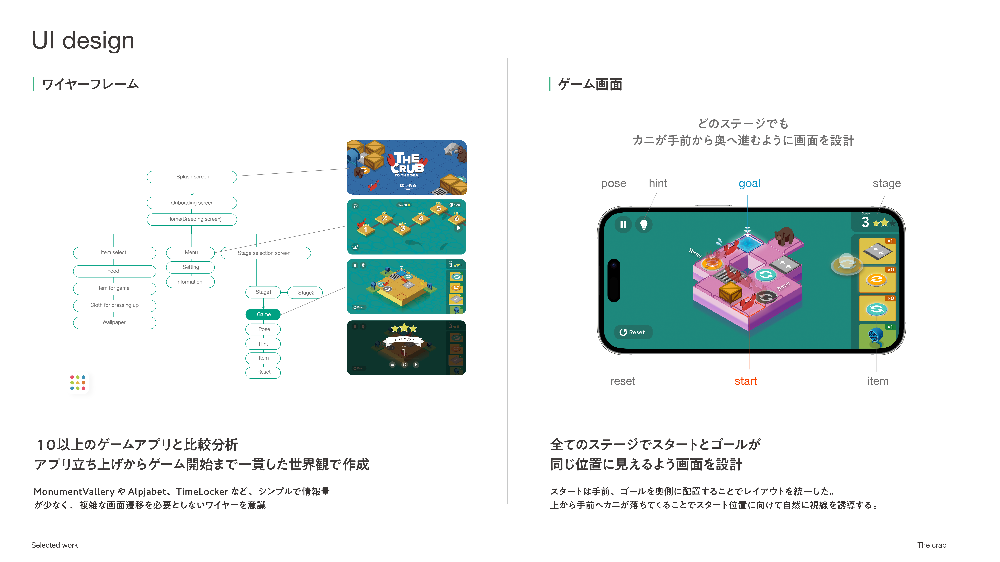
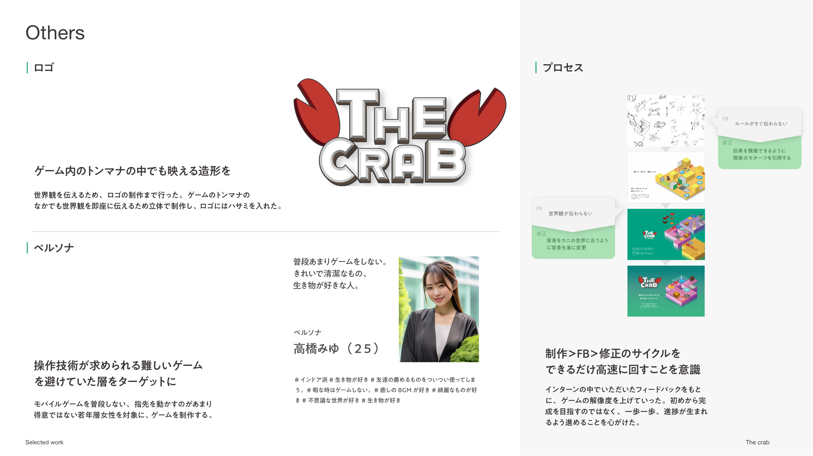
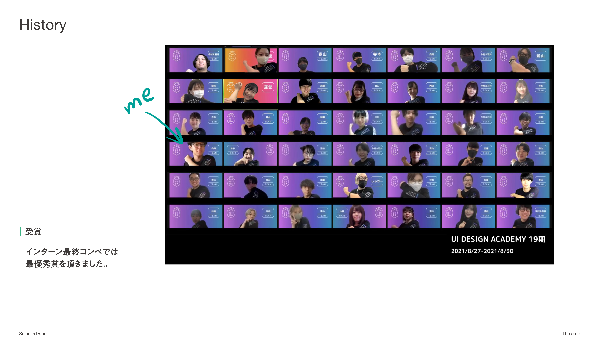
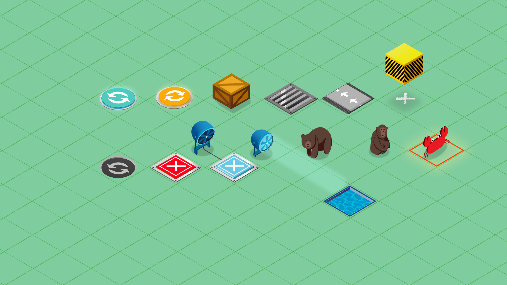

THE CRAB
2022
Member: 1
Design category: game design / concept design / UI design
Role: -
Achievements: Grand prize in the intern competition
THE CRABは横歩きしかできないカニの特徴を生かした戦略パズルゲームです。
このゲームの主人公は平面に生きるペラペラのカニです。このカニは自力で曲がることができません。アイテムを使って、カニの通り道を変えてあげましょう。
A strategic puzzle game that utilizes the characteristic of a crab that can only move sideways.
The protagonist is a flat crab living on a plane. This crab cannot turn on its own. Use items to change the crab’s path.